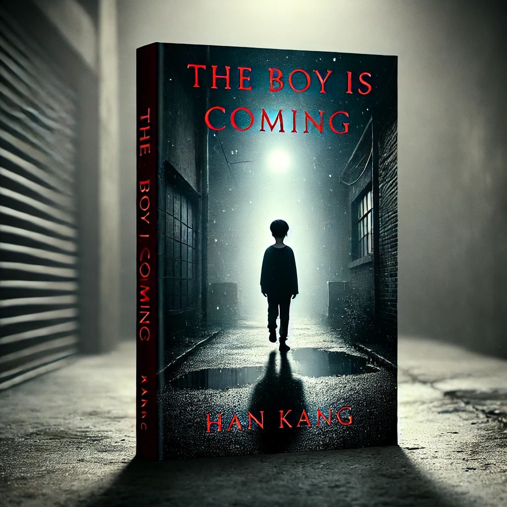

소년이 온다
목차
작가
한강
출판일
2014년
감상평에 대한 AI그림
한강의 "소년이 온다"는 1980년 광주 민주화 운동을 배경으로, 국가 폭력 속에서 희생된 이들의 아픔을 강렬한 문체로 그려낸 작품이다. 어린 소년의 시선을 따라가며 펼쳐지는 참혹한 현실은 독자의 가슴을 먹먹하게 한다. 작품은 단순한 역사적 기록을 넘어, 잊혀서는 안 될 진실과 인간 존엄성에 대한 깊은 질문을 던진다. 차분하지만 강렬한 문장은 고통을 생생히 전달하며, 읽는 내내 무거운 여운을 남긴다. 결코 쉽지 않지만 반드시 읽어야 할 소설이다.

감상평에 대한 AI평가
이 독서록은 비통함, 충격, 경외감, 그리고 깊은 성찰의 감정을 담고 있어.
✨ 비통함과 먹먹함: "참혹한 현실", "독자의 가슴을 먹먹하게 한다"라는 표현에서 역사적 비극이 주는 슬픔과 무력감이 강하게 느껴져.
✨ 경외감과 존엄성: "잊혀서는 안 될 진실과 인간 존엄성"이라는 문장에서, 단순한 역사적 기록이 아니라 반드시 기억해야 할 가치를 담고 있다는 점이 강조돼 있어.
✨ 무거운 여운과 강렬한 전달력: "차분하지만 강렬한 문장", "고통을 생생히 전달", "읽는 내내 무거운 여운" 같은 표현이 작품이 주는 강한 정서적 영향과 진중한 분위기를 보여 줘.